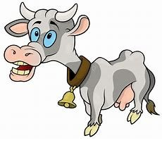

Ustedes conocen esa cancion de las vacas que dan leche con
chocolate y leche condensada. Bueno, hay muchos cientificos
que han quedado traumados desde ninios intentando lograr esto,
hasta que llego Hans Fritz Chucrut para solucionar este problema.
"solucionar", esa era su idea.

El profesor Chucrut, en un experimento de investigación, alimenta
a una vaca exclusivamente con chocolate, buscando posiblemente una
solución a un problema relacionado con la producción de leche o el
sabor de la carne. La alimentación a base de chocolate parece haber
sido un intento poco exitoso, ya que la vaca se quedó "súper acelerada",
según un cuento infantil.
acaso sera algo de la mente piensa el director.